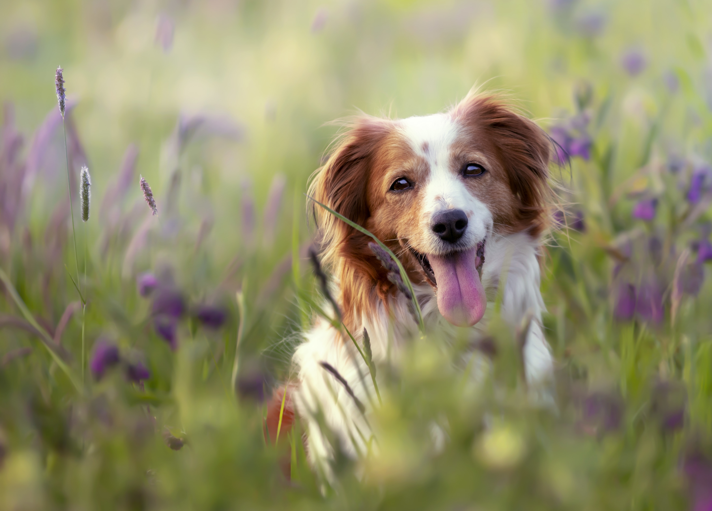
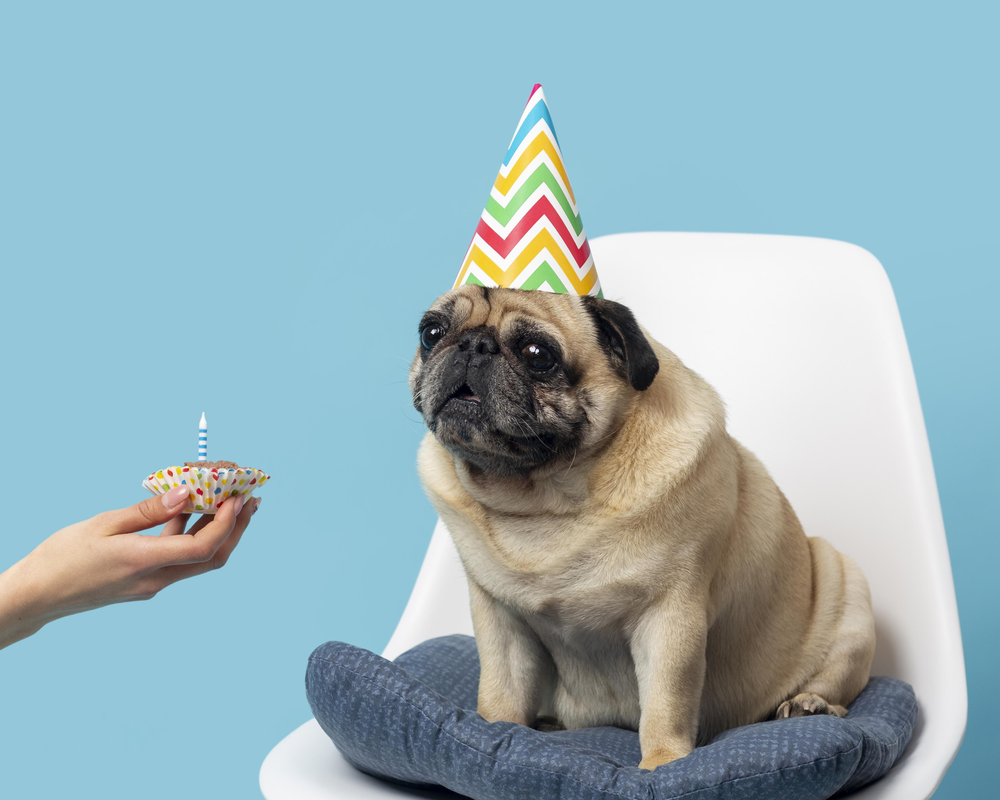

Do Dogs Know their Name?
Posted October 23rd 2023 - photo from https://www.freepik.com/
In my experience, dogs do know their names. They learn them quite quickly through frequent use.
As a matter of fact, you should notice your dog picking up on its name after only a couple weeks.
Essential Tips to Raise a Healthy Dog
Posted September 15th, 2023 - photo from https://www.freepik.com/

I would recommend you work on potty training your dog from day 1; this is a very important part
of keeping your dog healthy and clean. Secondly, I would recommend only feeding them 2 cups of food per day, as any more can lead to
obesity issues. Thirdly, it's important for dogs to be properly socialized with humans and other dogs, to prevent aggression and behaviour problems.
Why Does My Dog Bite Me?
Posted August 10th 2023 - photo from https://www.freepik.com/
Don't be alarmed if your puppy tries to nip your hand; puppies are chewing machines for the first couple years of their lives.
They chew to get rid of their baby teeth, and strengthen their adult ones. Sometimes your pup will mistake your hand or arm for a chew toy;
this is perfectly normal, and shouldn't be scolded too harshly. Simply redirect your dog with a chew toy or something he/she is allowed to chew
instead.
How To Throw a Birthday Party for your Dog
Posted July 1st, 2023 - photo from https://www.freepik.com/

Birthday parties for dogs are fairly simple. Dogs want nothing but chew toys, tasty treats, and dog friends;
so make sure you meet all 3 of these and you'll be set! With perhaps a cake-themed treat as the finishing touch.